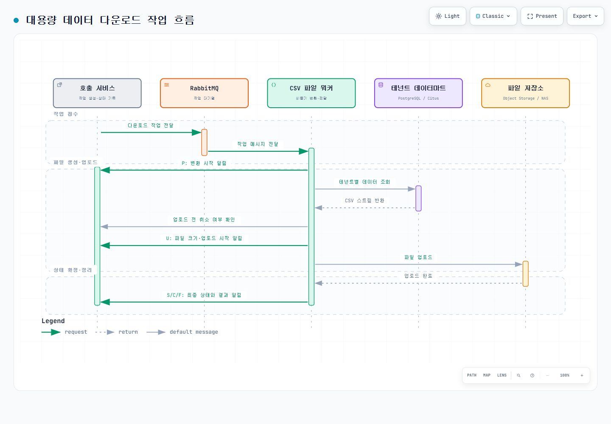

PROJECT 03 / 비동기 처리
대용량 데이터 다운로드를 위한 공통 파일 처리 워커
여러 서비스가 요청한 대용량 데이터 다운로드를 별도 작업으로 처리하는 Java/Spring 기반 워커입니다. 호출 서비스는 작업을 대기열에 전달한 뒤 바로 응답하고, 워커는 고객사별 데이터 조회, 파일 생성·업로드, 취소·실패 정리, 결과 통보를 맡습니다.
- 기간
- 2024.04 ~ 2024.07 · 이후 고도화
- 담당 역할
- 핵심 기능 설계·개발 · 기여도 80%
- Java
- Spring Boot
- RabbitMQ
- PostgreSQL / Citus
- Object Storage
- NAS
해결한 문제
- 대용량 데이터를 파일로 만드는 동안 일반 API 요청이 오래 대기하지 않도록 처리 경로를 분리해야 했습니다.
- 고객사별 데이터 위치, 파일 종류, 저장 위치가 달라질 때 공통 파일 생성 흐름까지 함께 수정되는 구조를 줄여야 했습니다.
- 취소·실패한 작업에서 로컬 임시 파일과 이미 업로드한 결과물이 남지 않도록 상태와 자원 정리 기준이 필요했습니다.
요청 처리와 파일 생성을 분리
RabbitMQ(메시지 대기열)를 수신한 워커가 파일 생성 작업을 비동기로 처리하도록 구성했습니다. 형식이 잘못된 요청은 반복 재처리하지 않고 종료하며, 일시적 오류는 정해진 횟수만큼 재시도한 뒤 실패 상태와 정리 절차로 넘깁니다.
메시지의 고객사 식별값으로 해당 데이터마트의 데이터소스와 스키마를 선택합니다. 작업이 끝나면 선택 정보를 해제해 다음 작업에 이전 고객사의 연결 정보가 남지 않도록 했습니다.
큰 결과를 스트리밍으로 생성
PostgreSQL/Citus의 데이터 내보내기 스트림을 CSV 파일에 순서대로 기록하고, 압축 파일도 스트림 방식으로 만듭니다. 전체 결과를 메모리에 한 번에 올리지 않으면서 대용량 다운로드를 처리합니다.
대상 저장소의 규칙에 따라 대용량 파일은 분할·압축하고 Excel 변환은 행 수 제한 안에서 수행합니다. 데이터 다운로드·메타데이터 파일과 Object Storage·NAS 등 저장 위치별 처리를 각각 분리했습니다.
상태 통보와 취소·실패 정리
호출 서비스의 연동 방식에 따라 기존 상태 저장소 또는 HTTP 상태 콜백으로 진행 상황을 통보합니다. 콜백은 워커가 작업 결과를 호출 서비스 API에 알려 주는 방식입니다.
업로드 전 취소 여부를 확인하고, 업로드 후에도 다시 확인해 취소된 작업의 원격 파일을 삭제합니다. 로컬 임시 파일과 고객사별 연결 정보는 작업 종료 시 정리합니다.
| 상태 | 의미 |
|---|---|
| P | 파일 변환 시작 |
| U | 파일 업로드 시작 |
| S / F / C | 성공 / 실패 / 취소 |
검증과 운영 보완
- 잘못된 메시지를 재시도 대상에서 구분하고, 재시도 횟수 소진 시 최종 실패 처리와 파일 정리가 수행되는지 테스트했습니다.
- 상태 저장 방식 선택, 파일 처리 유형, 저장소별 업로드, 생성 결과물 등록을 단위 테스트로 검증했습니다.
- 대용량 Object Storage 업로드의 메모리 사용을 줄이고, 오래 지속되는 데이터 내보내기 연결에는 소켓·구문 제한 시간과 TCP keepalive를 적용했습니다.
결과
호출 서비스는 긴 파일 생성 로직을 직접 구현하지 않고 작업 메시지와 상태 통보 규격으로 공통 워커를 연동할 수 있게 됐습니다. 고객사별 데이터 경계와 저장소별 차이를 작업 흐름에서 분리해 연동 대상이 늘어도 변경 범위를 좁혔습니다.
취소·실패 시 상태와 결과물 정리를 같은 흐름에서 수행해 화면의 작업 상태와 실제 파일이 어긋날 가능성을 줄였습니다.
대용량 데이터 다운로드 작업 흐름
변환 시작과 업로드 상태를 통보하고, 업로드 전후 취소 여부를 확인합니다. 최종 상태를 알린 뒤 임시 파일과 연결 정보를 정리합니다.
